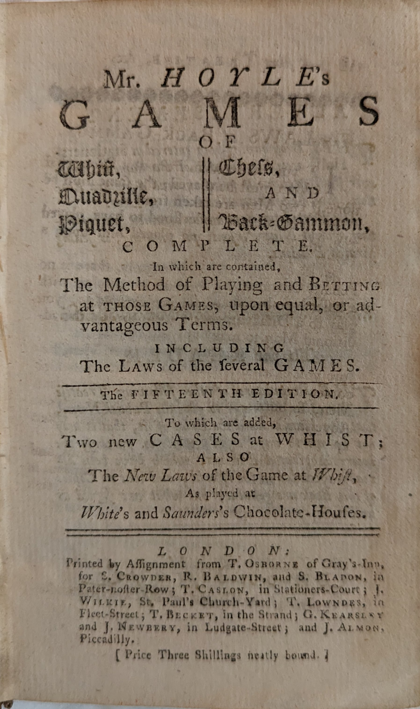

 |
Title: |
Mr. HOYLE's | GAMES | OF | [three lines to left of double rule] Whiſt, | Quadrille, | Piquet, | [three lines to right of double rule] Cheƒs, | AND | Back=Gammon, | COMPLETE. | In which are contained, | The Method of Playing and Betting | at those Games, upon equal, or ad-|vantageous Terms. | INCLUDING | The Laws of the ſeveral GAMES. | [rule] | The FIFTEENTH EDITION. | [rule] |
To which are added, | Two new CASES at WHIST; | ALSO | The New Laws of the Game at Whiſt, | As played at | White's and Saunders’s Chocolate-Houſes. | [double rule] | LONDON: | Printed by Aſſignment from T. Osborne of Gray’s-Inn, | for S. Crowder, R. Baldwin, and S. Bladon, in | Pater-noſter-Row; T. Caslon, in Stationers-Court; J. | Wilkie, St. Paul’s Church-Yard; T. Lowndes, in | Fleet-Street; T. Becket, in the Strand; G. Kearsley | and J. Newbery, in Ludgate-Street; and J. Almon, Piccadilly. | {Price Three Shillings neatly
bound.} |
| Collation: |
12o: a6 B–K12 [$½ (−B1,I3) signed]; 114 leaves, pp. [i–ii] iii–xii, [1–3] 4–7 [8] 9–91 [92–95] 96–120 [121–123] 124–156 [157] 158–172 [173–175] 176–216 |
| Section Title Whist |
A SHORT | TREATISE | On the GAME of | WHIST. | CONTAINING | The LAWS
of the GAME: | AND ALSO | Some Rules, whereby a Beginner may, with due Attention | to them, obtain to the
playing it well. | Calculations for thoſe who will Bet the Odds on any | Points of the Score of the
Game then playing and depend-|ing. | Cases ſtated, to ſhew what may be effected by a very good | Player in
Critical Parts of the Game. | References to Cases, viz. at the End of the Rule, you | are directed how to find them. | Calculations, directing with moral Certainty, how to | play well any Hand or Game,
by ſhewing the Chances of | your Partner’s having 1, 2, or 3 certain Cards.
| With Variety of Cases added in the Appendix. | [rule] | By Edmond Hoyle, Gent. | [rule] | The Laws of the Game, and an Explanation of the
Calcula-|tions which are neceſſary to be underſtood by thoſe who | would
play it well. | And also | A Dictionary for WHIST, which reſolves | almoſt all the critcal Caſes that may
happen at the | Game. | To which is added, | An ARTIFICIAL MEMORY | Or, an eaſy Method of
aſſiſting the Memory of | thoſe that play at the Game of WHIST. |
| Section Title Quadrille |
[row of type orn] | A SHORT | TREATISE | On the GAME of | QUADRILLE;
| SHEWING | The Odds of winning or loſing moſt Games | that are commonly played, either by calling | a King, or by playing Sans Prendre. | To which are added, | The LAWS of the GAME. | The Seventh Edition. | By Edmond Hoyle, Gent. | [row of type orn] |
| Section Title Piquet and Chess |
[row of type orn] | A SHORT | TREATISE | On the GAME of | PIQUET; |
DIRECTING, | With moral Certainty, how to diſcard any | Hand to Advantage,
by ſhewing the Chances | of taking in any one, two, three, four, or | five
certain Cards. | Computations for thoſe who Bet their | Money at the Game. | ALSO | The LAWS of the GAME. | To which are added, | Some Rules and Observations | for playing well at CHESS. | The Seventh Edition. | By Edmond Hoyle, Gent. | [row of type orn] |
| Section Title Backgammon |
[row of type orn] | A SHORT | TREATISE | On the GAME of |
BACK-GAMMON. | CONTAINING | [12 lines to left of rule] A Table of the thirty-ſix | Chances, with Directions | how to find out the
Odds | of being hit, upon ſingle, or | double Dice. | Rules whereby a
Beginner | may, with due Attention | to them, attain playing it | well. |
The ſeveral Stages for carry-|ing your Men home, in | order to loſe no Point. | [12
lines to right of rule] How to find out who is for-|wardeſt to
win a Hit. | Caſes ſtated for Back-Games, | with Directions how to play |
for one. | Caſes ſtated, how to know | when you may have the bet-|ter of
ſaving a Gammon | by running. | Variety of Caſes of Curioſity | and
Inſtruction. | The Laws of the Game. | The Eighth Edition. | By Edmond Hoyle, Gent. | [row of type orn] |
| Contents: |
Signature (Page) Reference |
Contents |
Signature (Page) Reference |
Running Titles |
| a1r (i) |
title |
|
|
| a1v (ii) |
‘ADVERTISEMENT. | [...] | To the READER. | [...] | [woodblock
autograph of Edmond Hoyle]’ |
|
|
| a2r–a6v (iii–xii) |
‘[row of type orn] | CONTENTS. | [...]’ |
a2v–a6v (iv–xii) |
‘The CONTENTS.’ |
| B1r (1) |
section title Whist |
|
|
| B1v (2) |
blank |
|
|
| B2r–E10r (3–91) |
‘[double rule] | A SHORT | TREATISE | On the GAME of | WHIST. |
[...]’ |
B2v–E10r (4–91) |
‘A ſhort Treatise on | the Game of WHIST.’ |
| E10v (92) |
blank |
|
|
| E11r (93) |
section title Quadrille |
|
|
| E11v (94) |
blank |
|
|
| E12r–F12v (95–120) |
‘[double rule] | A SHORT | TREATISE | On the GAME of | QUADRILLE. |
[...]’ |
E12v–F12r (96–119) |
‘A ſhort Treatise on the | Game of QUADRILLE.’ |
|
|
on E12v (96) |
‘A ſhort Treatise on’ |
|
|
F12v (120) |
‘A ſhort Treatise, &c.’ |
| G1r (121) |
section title Piquet |
|
|
| G1v (122) |
blank |
|
|
| G2r–H6v (123–156) |
‘[double rule] | A | TREATISE | On the GAME of | PIQUET. |
[...]’ |
G2v–H6v (124–156) |
‘A Treatise on PIQUET.’ |
| H7r–I2v (157–172) |
‘[double rule] | SOME | Rules and Observations | FOR | Playing well at CHESS. | [...]’ |
H7v–I2r (158–171) |
‘Rules and Observations | for playing at CHESS.’ |
|
|
I2v (172) |
‘Rules and Observations, &c.’ |
| I3r (173) |
section title Backgammon |
|
|
| I3v (174) |
blank |
|
|
| I4r–K12v (175–216) |
‘[double rule] | A SHORT | TREATISE | On the GAME of | BACK-GAMMON.
| [...]’ |
I4v–K12r (176–215) |
‘A ſhort Treatise on the | Game of BACK-GAMMON.’ |
|
|
K12v (216) |
‘A ſhort Treatise, &c.’ |
| Catchwords: |
a6r(xi) another [Odds,] |
| Press Figures: |
a6r(i):4; B11v(i):2; C11v(i):5; C12v(o):2; D11r(o):3; D11v(i):5; E6v(o):5; E8r(i):2; F11r(o):4; F12r(i):5; G8v(o):3; G11v(i):4; H11r(o):5; H12r(i):4; I8r(i):5; I11r(o):3; K6v(o):3; K12r(i):4 |
| Publisher: |
Stanley Crowder, Robert Baldwin I, Samuel Bladon, Thomas Caslon, John Wilkie, Thomas Lowndes, Thomas Becket, George Kearsley, John Newbery, John Almon |
| Notices: |
1771-11-12 London Evening Post: "This day was published, price 3s. Neatly bound in red leather. To which
are added, some new cases at whist never before printed...A new edition,
being the 15th..." The advertisement lists Francis Newbery instead of John Newbery (d. 1767)
and also adds Thomas Davies, who first appeared on the imprint of Games.7 (1775). |
| Price: |
3s. (title, advertisement) |
| References: |
ESTC T88031, Horr 661, Jessel 808, Rather 51 |
| Copies Seen: |
BFl [I.795/HOYL (b1124795)]; BFl [I.795/HOYL (b1124997]; E [L.C.2455]; L [1040.b.31] (ECCO); O [Jessel f.567]; Copisarow [2 copies]; CLU-SC [GV1241.H85g 1772]; NvLN [GV1241.H69 1770?]; OCl [W 789.87H F73L]; PPL [In Hoyl Games 1770]; TNJ [GV1241.H8 M15 c.1]; TNJ [GV1241.H8 M15 c.2]; Levy [1032]; Levy [1667]; Levy [1668] |
| Other Copies: |
Lg [2.2.29]; Luk [GV1241.H5]; NT [NOS]; Neilson; DE-15 [82-G-8131]; GOT [8moA.ill.2915/15]; HAG [KW 363 D 28] (Google); ICR [Fiskesafn 795 Hoy]; LT [Wb 720]; CU-I [GV1241.H6 1770]; CaAEU [GV1241.H86]; CtY-BR [LWL 63 770 H85]; IdeKN [GV1241.H6 1770]; LU [GV1241.H6 1770]; MH [SG 3117.70.5]; MH [SG 3117.71]; NhU [GV1241.H6 1770]; OCU [GV1241.H6 1770]; TxSaT [GV1241.H6 1770]; AuNSL [T0083217]; AuVSL [RARES 793 H85 (1770-73)]; ZDU [Shoults Eb 1770? H]; ZWTU [REng HOYLE MrHo 1770] |